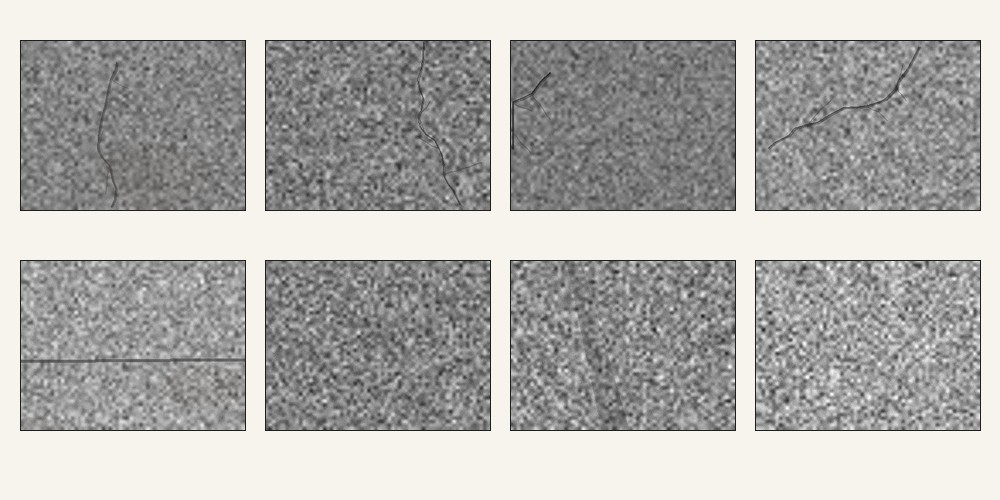

Du bâtiment au chantier : jusqu’où peut aller un environnement connecté ?
Vous allez explorer des systèmes réellement visibles sur Internet, mettre à l’épreuve des outils de vision par intelligence artificielle et observer comment des véhicules ou engins peuvent être suivis à distance. L’objectif n’est pas d’apprendre trois logiciels : il est de comprendre ce qu’ils rendent possible, ce qu’ils ne prouvent pas et quelles précautions sont nécessaires avant de s’appuyer sur eux.
Une caméra, un automate, un onduleur ou un système de bâtiment : que peut-on voir depuis Internet ?
Shodan est un moteur de recherche spécialisé dans les services accessibles depuis Internet. Vous allez d’abord comprendre ce qu’il indexe, puis explorer plusieurs familles de systèmes pour mesurer l’étendue des usages concernés.
Repères
Lorsqu’un service accessible depuis Internet répond, il peut fournir des informations sur lui-même : logiciel, modèle, version, protocole, organisation réseau, etc. Shodan collecte ces réponses dans des banners et permet de les rechercher. Voir un résultat dans Shodan signifie qu’un service a été observé depuis Internet ; cela ne signifie ni qu’il est vulnérable ni qu’il peut être contrôlé.
1.1 · Première recherche
Une fois connecté, saisissez exactement Moxa Nport dans la barre de recherche, lancez la recherche puis ouvrez un résultat de la première page. Repérez le pays, l’organisation réseau, le port et le contenu de la banner. Regardez également les informations présentées autour du résultat : elles ne proviennent pas toutes nécessairement du même mécanisme.
Expliquez avec vos mots ce que fait Shodan. Relevez ensuite quatre informations observables dans le résultat choisi et indiquez, pour chacune, ce qu’elle vous apprend réellement sur le système.
1.2 · Un tour rapide du monde connecté
Effectuez les cinq recherches textuelles ci-dessous. Pour chacune, restez sur la première page, observez quelques résultats et utilisez la colonne de gauche pour repérer les principaux pays, organisations, produits ou ports proposés par Shodan. N’ajoutez pas de filtre : les recherches demandées ici sont volontairement de simples recherches textuelles compatibles avec un compte gratuit standard.
webcamXPCaméras et vidéosurveillanceBACnetAutomatisation et gestion technique de bâtimentsolar inverterProduction photovoltaïque et énergieSiemens S7Automates et systèmes industrielsOctoPrintImprimantes 3D pilotées et supervisées à distancePour chaque recherche, trouvez au moins une information qui dépasse le simple fait que « l’équipement existe » : constructeur, modèle, version, organisation, protocole, pays, nom de produit ou autre élément technique.
Présentez les cinq recherches dans un tableau très court : type de système / information observée / pays ou répartition remarquable / usage possible dans ou autour du BTP. Quelle recherche vous paraît la plus éloignée de l’image que vous aviez d’un « environnement connecté » ?
1.3 · Caméras : exposition voulue ou exposition subie ?
Revenez à webcamXP. Parcourez plusieurs résultats et observez ce que Shodan donne à voir : produit, localisation approximative, organisation, titre éventuel, informations de banner et, lorsqu’une capture est effectivement proposée dans votre interface, son contenu. N’essayez jamais d’ouvrir directement l’adresse du système trouvé.
Imaginez deux usages : (a) une caméra de chantier volontairement rendue publique pour montrer l’avancement des travaux et (b) une caméra technique dont l’accès public ne serait pas attendu. À partir de Shodan seul, pouvez-vous distinguer les deux cas ? Relevez les indices qui peuvent aider, puis les informations qui vous manquent encore pour conclure.
1.4 · Un avis de sécurité concerne-t-il vraiment le système observé ?
Recherchez Metasys dans Shodan et ouvrez un résultat de la première page. Ne cherchez pas d’abord à décider s’il est « vulnérable ». Relevez simplement ce que Shodan permet d’identifier : nom du produit, version si elle est affichée et autres éléments techniques utiles.
Ouvrez ensuite l’avis officiel ci-dessous. Repérez précisément quels produits et quelles versions sont concernés. Votre travail consiste alors à comparer les deux sources : elles parlent peut-être du même produit, mais cela ne signifie pas automatiquement qu’elles parlent de la même version ou de la même configuration.
Comparez les deux sources dans un petit tableau : ce que Shodan indique / ce que l’avis indique / peut-on établir que le résultat observé est concerné ? Si la réponse reste incertaine, indiquez exactement quelle information manque. Terminez par la première vérification concrète que vous demanderiez au responsable du système.
Une caméra peut-elle devenir un outil de suivi ou d’inspection fiable ?
La vision par ordinateur est utilisée pour le contrôle visuel, la sécurité, le suivi d’avancement ou le repérage d’équipements. Vous allez partir d’outils qui semblent fonctionner, chercher leurs limites, puis construire une expérience simple pour comprendre pourquoi une validation sur quelques images ne suffit pas avant un usage réel.
Repères
Une caméra fournit des images. Un modèle peut ensuite y repérer un objet, une zone ou une catégorie. Entre cette sortie et une décision de chantier, il reste toujours une étape d’interprétation. Une fissure détectée n’est pas un diagnostic ; un engin repéré n’est pas une preuve d’avancement ; un score élevé n’est pas une garantie de fiabilité sur un autre chantier.
2.1 · Avant l’IA : qu’aimeriez-vous extraire de ces images ?
Commencez sans ouvrir les outils. Observez les images ci-dessous. Elles illustrent deux familles de problèmes très différentes : repérer un défaut local et décrire une scène de chantier.




Pour chaque image, proposez une information qu’un système automatique pourrait raisonnablement extraire. Distinguez ce qui relève d’une observation visuelle (présence, localisation, comptage, défaut visible…) de ce qui demanderait déjà une interprétation métier (gravité, conformité, avancement réel, décision à prendre).
Ouvrez maintenant les deux démonstrations Roboflow. Dans chaque page, descendez jusqu’au bloc Run on custom image, puis déposez l’image ou cliquez pour la sélectionner. Vous n’avez pas besoin de créer un projet ni d’utiliser Deploy This Model. Testez les images A à D lorsque cela a du sens et observez surtout la nature de la sortie produite : classe, objets, zones, scores, etc.
Comparez vos attentes de Q5 avec les sorties obtenues. Que produit réellement chacun des deux systèmes ? Pour chacun, donnez une décision que sa sortie peut aider à préparer et une décision qu’elle ne permet pas de prendre seule.
2.2 · Tester un modèle existant sur des cas variés
Téléchargez le jeu d’évaluation et passez les images dans la démonstration de détection de fissures. Pour chaque image, notez brièvement le résultat attendu et le résultat obtenu. Cherchez surtout les cas où le modèle hésite, manque une fissure ou détecte autre chose.
Quels types d’erreurs ou de limites observez-vous ? Présentez au moins deux cas réussis et deux cas problématiques. Les mêmes limites seraient-elles acceptables pour une aide à l’inspection et pour une décision automatique ?
2.3 · Chercher volontairement ses limites
Choisissez en ligne deux images supplémentaires : l’une que vous pensez facile, l’autre que vous pensez susceptible de tromper le modèle. Conservez l’URL de chaque image et notez votre prédiction avant de les tester.
Votre image « difficile » peut jouer sur la texture, une ombre, un joint, une fissure très fine, un matériau différent ou une prise de vue inhabituelle.
Votre prédiction était-elle correcte ? Qu’est-ce que ce petit test vous apprend sur la difficulté d’évaluer une IA à partir de quelques démonstrations réussies ?
2.4 · Construire une petite expérience de validation
Ouvrez Teachable Machine sur ordinateur, de préférence avec Google Chrome, puis choisissez Image Project → Standard image model. Téléchargez et décompressez le jeu d’apprentissage avant de l’importer. Renommez les deux classes fissure et sans fissure. Pour chaque classe, utilisez Upload — pas la webcam — et sélectionnez toutes les images du dossier correspondant. Cliquez ensuite sur Train Model. Lorsque l’entraînement est terminé, utilisez la zone de prévisualisation pour tester quelques images issues de ce même jeu.
Testez le modèle sur plusieurs images issues du jeu d’apprentissage. Qu’avez-vous réellement validé avec ce test ? Indiquez ce que ce résultat permet d’affirmer et, surtout, ce qu’il ne permet pas encore d’évaluer.
2.5 · Tester sur des images réellement nouvelles
Téléchargez et décompressez maintenant le jeu de test indépendant. Ces images servent uniquement à évaluer le modèle : ne les ajoutez pas aux classes d’apprentissage. Chargez-les une à une dans la zone de prévisualisation de Teachable Machine et notez les prédictions avant de modifier quoi que ce soit.
Comparez les résultats obtenus sur les images familières et sur le jeu indépendant. Proposez au moins deux hypothèses pouvant expliquer un écart de performance.
2.6 · Comprendre pourquoi le modèle se trompe
Examinez attentivement les images du jeu d’apprentissage : luminosité, fond, texture, contraste, cadrage… Cherchez une caractéristique qui pourrait aider à séparer les deux classes sans réellement « comprendre » la présence d’une fissure.
Identifiez une ou plusieurs régularités parasites possibles dans le jeu d’apprentissage. Expliquez comment un modèle pourrait les utiliser à la place du concept que vous vouliez lui apprendre.
2.7 · Corriger l’expérience et définir une validation terrain
Téléchargez et décompressez les images complémentaires. Ajoutez à vos classes d’apprentissage celles qui permettent de tester ou corriger l’hypothèse formulée en Q11, puis cliquez de nouveau sur Train Model. Retestez ensuite exactement le même jeu indépendant afin que la comparaison avant / après reste valable.
Retestez le même jeu indépendant après votre modification et comparez les résultats avant / après. L’évolution confirme-t-elle votre hypothèse ? À partir de l’ensemble de vos essais, proposez ensuite le protocole de validation que vous exigeriez avant d’utiliser une vision automatique sur plusieurs chantiers : diversité des sites et prises de vue, cas difficiles, erreurs à surveiller, nouveau test encore jamais vu et niveau d’automatisation acceptable.
Le même suivi ne convient pas à tous les équipements d’un chantier.
Localiser un camion, retrouver une remorque et savoir sur quel chantier se trouve un petit outil sont trois problèmes différents. Vous allez commencer par une interface GPS réelle, puis comparer plusieurs technologies réellement utilisées pour le suivi d’actifs dans la construction.
Repères
Le mot « tracking » recouvre plusieurs réalités. Un véhicule alimenté peut envoyer fréquemment sa position et des informations de fonctionnement. Un actif non alimenté doit préserver sa batterie. Un petit outil peut être repéré lorsqu’il passe à proximité d’un téléphone ou d’une passerelle. La technologie pertinente dépend donc de ce que l’on veut savoir et de la manière dont l’équipement est utilisé.
3.1 · De la position à une information exploitable
Ouvrez la démonstration publique MTS. Cliquez sur Open Full Demo, puis Objects. Sélectionnez un véhicule, observez les informations disponibles et utilisez le replay pour examiner un trajet.
À partir de cette interface, distinguez ce qui est une donnée de position, ce qui est reconstruit à partir de plusieurs positions et ce qui devient une information utile à l’exploitation. Donnez trois exemples de décisions qu’un responsable de chantier ou de flotte pourrait préparer avec ces informations.
3.2 · Tous les actifs ne se suivent pas de la même façon
Consultez les documentations Hilti ci-dessous. Elles présentent trois approches réellement utilisées dans ON!Track :
- Sensor Tag : un petit tag Bluetooth attaché à un outil ; un téléphone ou une gateway proche peut signaler où il a été vu.
- Geo Tag : un traceur autonome destiné notamment aux remorques, conteneurs ou autres actifs non alimentés.
- Proactive Asset Tracking : des gateways installées sur sites, véhicules ou équipements mettent automatiquement à jour la présence et la localisation des actifs tagués.
Comparez les trois approches dans un tableau : type d’actif adapté / information obtenue / équipement nécessaire autour de l’actif / principal avantage / principale limite. Expliquez pourquoi « mettre un GPS sur tout » ne serait pas nécessairement la meilleure stratégie.
3.3 · Choisir un suivi adapté à chaque actif
Dans les documentations, repérez comment les technologies diffèrent dans la manière et la fréquence de mise à jour : signal Bluetooth détecté à proximité, mises à jour périodiques d’un Geo Tag autonome, suivi plus fréquent lorsqu’une gateway ou un équipement alimenté est disponible.
Pour un petit perforateur électroportatif, une remorque et une pelle mécanique, choisissez le type de suivi qui vous paraît le plus cohérent. Justifiez vos choix en discutant au minimum autonomie, fréquence utile des mises à jour, couverture nécessaire et valeur de l’actif. Dans quel cas une localisation moins fréquente peut-elle être parfaitement suffisante ?
3.4 · Au-delà de la position : comprendre l’usage de l’engin
Consultez maintenant VisionLink de Caterpillar. Repérez les informations qui complètent la localisation d’un engin : heures moteur, démarrage/arrêt, ralenti, carburant, événements et maintenance.
Donnez au moins quatre décisions d’exploitation pour lesquelles la position seule est insuffisante. Pour chacune, précisez la donnée supplémentaire nécessaire et expliquez ce qu’elle apporte : disponibilité d’un engin, sous-utilisation, maintenance, consommation, temps de ralenti, etc.
3.5 · Concevoir le suivi d’un parc mixte
Une entreprise exploite plusieurs chantiers et souhaite suivre :
- des pelles et chargeuses de forte valeur ;
- des remorques, conteneurs et groupes électrogènes qui changent régulièrement de site ;
- un grand nombre de petits outils électroportatifs répartis entre véhicules, dépôt et chantiers.
Proposez une architecture de suivi cohérente pour ces trois catégories en réutilisant les solutions étudiées. Pour chacune, indiquez ce que vous cherchez réellement à savoir, le mécanisme de suivi choisi, les alertes utiles et les personnes qui devraient recevoir ces alertes. Justifiez les différences entre les trois catégories.
3.6 · Interpréter les alertes avant d’agir
Considérez trois événements : un Geo Tag signale une remorque dans une zone inattendue ; une pelle ne transmet plus ses données de télématique ; des outils attendus sur un chantier ne sont plus détectés par la gateway installée sur place.
Pour chacun des trois événements, indiquez ce que vous pouvez réellement conclure, au moins deux explications possibles et l’action que vous recommanderiez avant de déclarer un vol, une panne ou une perte. Terminez par une règle concernant la vie privée ou la proportionnalité du suivi lorsqu’un dispositif permet aussi de suivre indirectement l’activité de personnes.